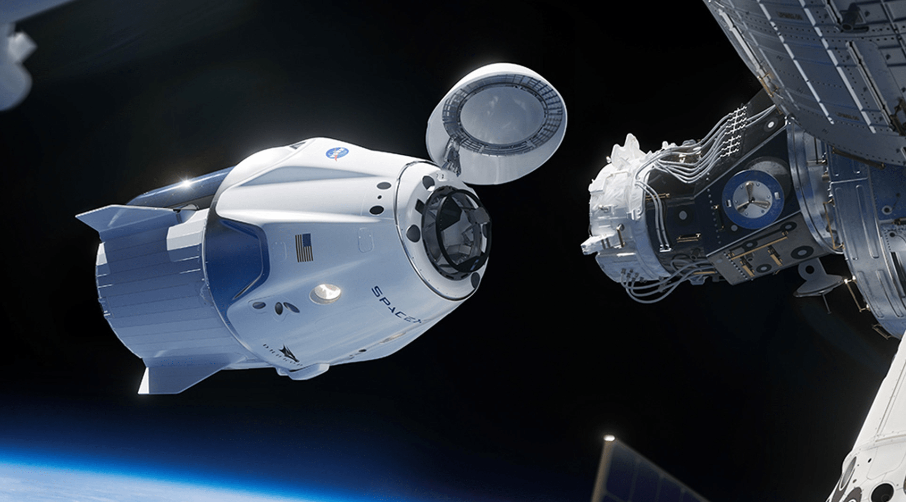

Hyperblog
Tu blog de cabecera final
Hyperblog
Tu blog de cabecera final
Cápsula SpaceX
La cápsula Dragon de SpaceX es el segundo dispositivo capaz de llegar en la actualidad hasta la ISS, junto al muy fiable Soyouz ruso, que desde 2011 ha conducido a todos los visitantes de la estación, después de que Estados Unidos interrumpiera sus vuelos tripulados hace nueve años